全部笔记
体型
用 Bodysuit 做丰满体型
HOW TO CREATE BODY PLUS SIZE MODEL IN VROID STUDIO STABLE VERS. · 2026-11-25
改完的全身
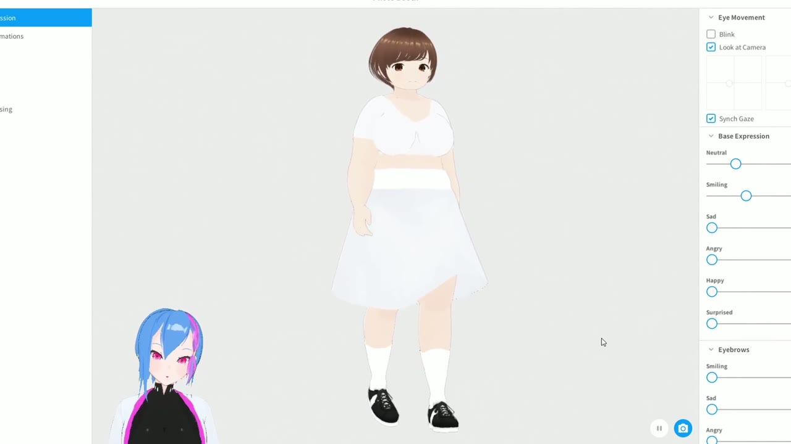
0:15 · 窗口标题是 Photo Booth。左侧菜单被切掉，不记残字。右侧 Eye Movement：Blink 没勾，Look at Camera 勾着。Synch Gaze 勾着。Base Expression 和 Eyebrows 的圆点都在中间，这一帧没有在拖。
开头先给结果：短棕发，白短上衣和白裙，小腿白袜，黑鞋。上臂、小腹和大腿都比后面的起点厚。右下角蓝发的人是视频里的形象，不是正在改的模型。红格子订阅字是后来才贴上的，这一张没有。界面语言是英文，后面编辑窗口的标题栏写着 VRoid Studio 1.11.1。
起点还是瘦的
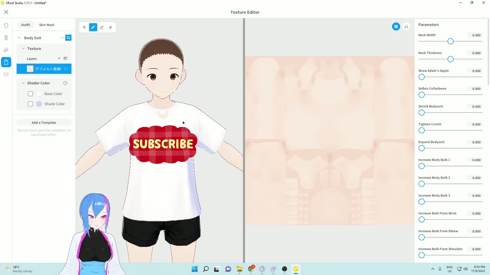
0:40 · Texture Editor。左侧 Outfit 页，Body Suit → Texture → Layers，选中「デフォルト画像」。Shader Color 的 Base Color、Shade Color 都没勾。右侧 Neck Width、Neck Thickness、Show Adam's Apple、Soften Collarbone、Shrink Bodysuit、Tighten Crotch、Expand Bodysuit、Increase Body Bulk 1 到 3、Increase Bulk From Wrist、From Elbow、From Shoulder 全是 0.000。
教程从这具身体做起，不是从封面那套衣服倒着改。人站着，肩窄，白 T 恤，黑短裤。右边这列是这件 Bodysuit 自己的参数，不是 Body 页里的体型滑杆。这一帧全部停在 0.000，轮廓还是瘦的。胸口的红字是视频贴上去的，不是 VRoid 按钮，后面好几张都会挡住胸口或下腹。
皮肤贴图放进 Bodysuit
载入 layer.png
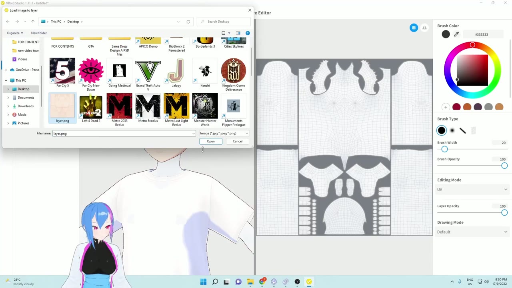
0:28 · 标题栏 VRoid Studio 1.11.1 - Untitled*。对话框标题 Load image to layer，文件名 layer.png，按钮 Open。右侧贴图编辑器：Brush Color #333333，Brush Width 20，Brush Opacity 100，Editing Mode 是 UV，Layer Opacity 100，Drawing Mode 是 Default。
口播说身体贴图从 BOOTH 下载，要放进 bodysuit layer，不要放进 body editor。画面上是把桌面的 layer.png 载进当前层，没有把网址打出来。简介里的免费底模是 slayzavy.booth.pm/items/4254805 。这一帧笔刷那些数都在，但没有下笔。任务栏日期是 17/9/2022。
两套模板是同一张 UV
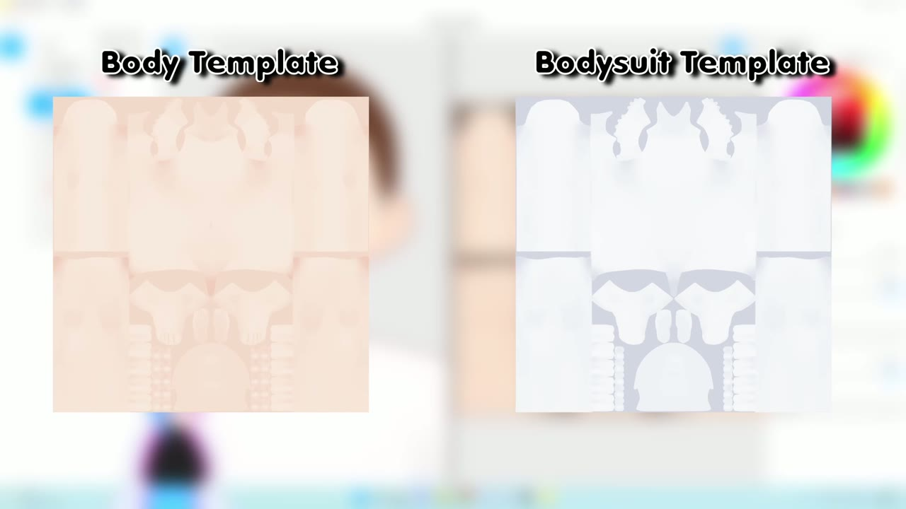
0:32 · 画面上的字是 Body Template 和 Bodysuit Template。两张都是身体 UV，左边肉色，右边白色。
口播说这两套模板一样，所以身体贴图可以铺在 Bodysuit 上。这张是对照，不是在拖滑杆。
先在 Bodysuit 上把体积撑开
Expand Bodysuit
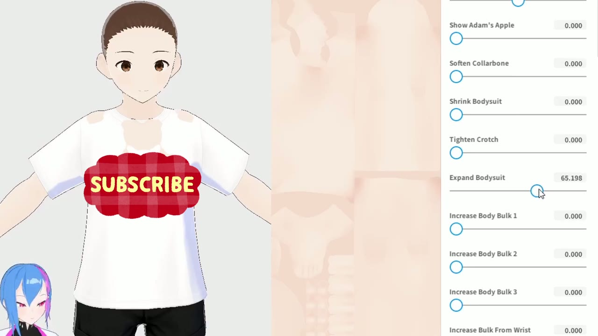
0:48 · 仍是 Texture Editor 的 Parameters。Show Adam's Apple、Soften Collarbone、Shrink Bodysuit、Tighten Crotch 是 0.000。光标在 Expand Bodysuit，读数 65.198。Increase Body Bulk 1、2、3 和 Increase Bulk From Wrist 是 0.000。
口播说先把 bodysuit 展开，大约 65。画面停在 65.198。这一帧肩和腰看起来还是瘦的，白 T 恤肩上有两块贴图破洞。变厚是后面几项叠上去的。Shrink Bodysuit 和 Tighten Crotch 没动。
Soften Collarbone
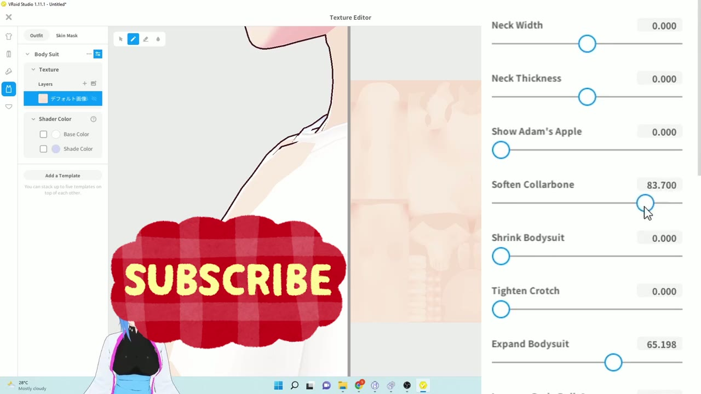
1:00 · Neck Width、Neck Thickness、Show Adam's Apple 是 0.000。光标在 Soften Collarbone，83.700。Shrink Bodysuit、Tighten Crotch 是 0.000。Expand Bodysuit 65.198。
口播说丰满身体不需要那么尖的锁骨，把 Soften Collarbone 往右推。画面是 83.700。脖子三项和 Shrink、Tighten 仍是 0。肩上的白衣服边缘还是破的，红字挡住了锁骨本身。
躯干加厚，手肘收一点
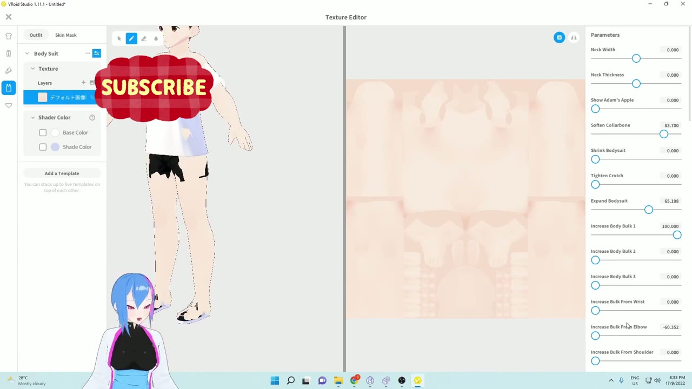
1:16 · Soften Collarbone 仍是 83.700，Expand Bodysuit 65.198。Increase Body Bulk 1 是 100.000，圆点在最右。Bulk 2、Bulk 3、Increase Bulk From Wrist 是 0.000。Increase Bulk From Elbow 是 -60.352。
Increase Body Bulk 1 推到 100.000，白衣服肩和侧腰的破洞更多，腿露出来，比 0:40 那张厚。Bulk 2 和 Bulk 3 在能看见的几屏里一直是 0.000。口播说手腕和脚踝加负数；画面上 Increase Bulk From Wrist 是 0.000，动的是 Increase Bulk From Elbow，读数 -60.352。同一时刻 Increase Bulk From Shoulder 和 Maximize Arm Bulk 也是 0.000。脚踝那一项先被拉到最右，读数 100.000，下一张才改成负数。
脚踝收到 -100，肩稍微鼓起
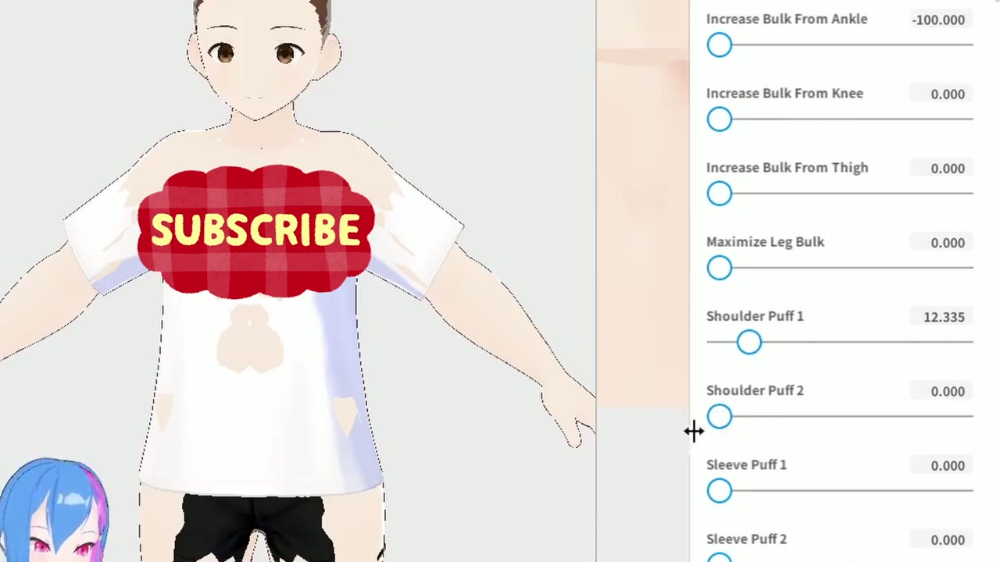
1:28 · Increase Bulk From Ankle -100.000。Increase Bulk From Knee、From Thigh、Maximize Leg Bulk 是 0.000。Shoulder Puff 1 是 12.335。Shoulder Puff 2、Sleeve Puff 1、Sleeve Puff 2 这一帧是 0.000。
脚踝从刚才的 100.000 改到 -100.000，圆点回到最左。膝和大腿的 Bulk、Maximize Leg Bulk 没动。Shoulder Puff 1 停在 12.335。大约四秒后 Shoulder Puff 2 被拖到 29.075，光标还按在圆点上，接着列表就滚走了，没有再看见它松开后的读数。Sleeve Puff、大腿和膝盖的 Puff 在下一屏里仍是 0.000。手臂比起点粗，肩头衣服继续破洞。
只压平了躯干
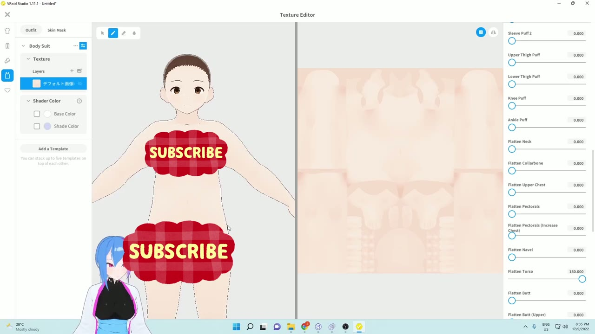
1:48 · Sleeve Puff 2、Upper Thigh Puff、Lower Thigh Puff、Knee Puff、Ankle Puff 是 0.000。Flatten Neck、Flatten Collarbone、Flatten Upper Chest、Flatten Pectorals、Flatten Pectorals (Increase Chest)、Flatten Navel 是 0.000。Flatten Torso 是 150.000，圆点在最右。Flatten Butt、Flatten Butt (Upper) 是 0.000。
白 T 恤脱掉了，露出 Bodysuit 上的皮肤。红字挡住胸和下腹，能看见的肩、臂和腰已经比 0:40 宽。口播说 Flatten 可以都拉到一百，甚至再高一点。画面上只有 Flatten Torso 离开 0：1:36 是 100.000，这一帧是 150.000，1:54 又回到 100.000。其余 Flatten 项，包括 Flatten Around Elbows、Flatten Legs、Flatten Around Knees、Flatten Fingers，看见的时候都是 0.000。
手指那一项符号被挡住
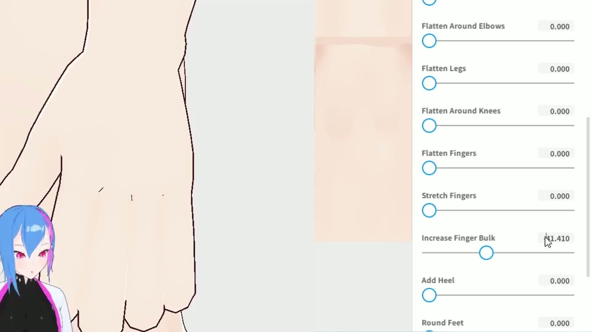
2:02 · Flatten Around Elbows、Flatten Legs、Flatten Around Knees、Flatten Fingers、Stretch Fingers 是 0.000。光标盖住 Increase Finger Bulk 读数的左边，看得见的数字是 41.410，圆点在滑杆中线左侧。Add Heel、Round Feet 是 0.000。
口播说手指不要加粗，要加负号，大约四十出头。1:59 读数框是 41.410，圆点已经在中线左边；这一帧光标正好挡住符号，所以不把负号写成确定值。Stretch Fingers、Add Heel、Round Feet 没动。手在画面里很大，是镜头推近，不是手指突然变长。
再到体型编辑器里改
切过来时，体型滑杆还是 0
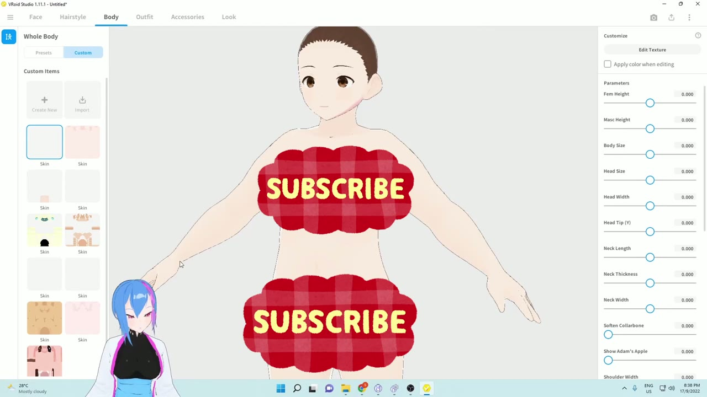
2:08 · 顶栏 Face、Hairstyle、Body、Outfit、Accessories、Look，选中 Body。左侧 Whole Body，Custom 亮着，不是 Presets。右侧 Customize，Apply color when editing 没勾。Fem Height、Masc Height、Body Size、Head Size、Head Width、Head Tip (Y)、Neck Length、Neck Thickness、Neck Width 都是 0.000。
口播说没有身体贴图，也可以在 body editor 里继续调。这一帧 Bodysuit 的体积还在，体型滑杆却全是 0：宽出来的肩臂是上一节的参数，不是这里拨的。胸和下腹仍被红字挡住。左侧皮肤缩略图没有被点成新的纹理编辑。
头缩小一点，头宽拉过 1
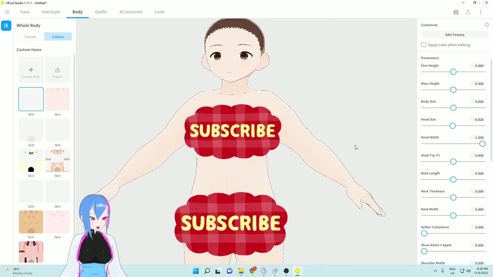
2:28 · Body → Whole Body → Custom。Fem Height、Masc Height、Body Size 是 0.000。Head Size -0.026。Head Width 1.500，圆点在最右。Head Tip (Y)、Neck Length、Neck Thickness、Neck Width、Soften Collarbone、Show Adam's Apple 是 0.000。最底下一行 Shoulder Width 也是 0.000。
Head Size 中间拖过 -0.115，松开后是 -0.026。Head Width 加到 1.500，头比 2:08 更宽。这页的脖子、Soften Collarbone、Show Adam's Apple 是体型编辑器自己的滑杆，和 Bodysuit 上同名的那几项不是同一处；这里都还是 0。肩还没动。
肩、胸、手臂和躯干
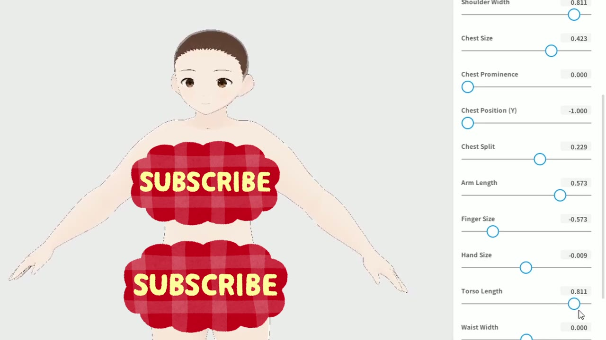
4:04 · Shoulder Width 0.811。Chest Size 0.423。Chest Prominence 0.000。Chest Position (Y) -1.000。Chest Split 0.229。Arm Length 0.573。Finger Size -0.573。Hand Size -0.009。光标在 Torso Length，0.811。Waist Width 还是 0.000。
肩先经过 0.749，停在 0.811，肩头比头宽那一张更开。Chest Size 经过 0.352，停在 0.423。Chest Prominence 没动。口播说胸要往下，才不像悬空；Chest Position (Y) 经过 -0.537，停在 -1.000，圆点在最左。Chest Split 经过 0.176，停在 0.229。Arm Length 0.573。Finger Size 先到过最右的 1.000，再收到 -0.573，手指变短而不是变粗。Hand Size 只到 -0.009，几乎没离开中间。Torso Length 0.811，身子比刚才长一截。红字仍挡住胸和下腹，能看的是肩线、手臂和脸。
腰拉到 2
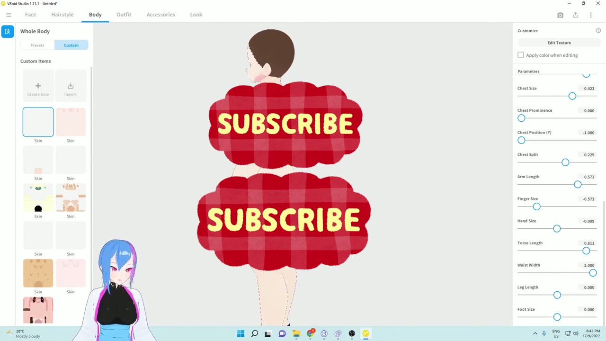
4:16 · Chest Size 0.423，Chest Prominence 0.000，Chest Position (Y) -1.000，Chest Split 0.229，Arm Length 0.573，Finger Size -0.573，Hand Size -0.009，Torso Length 0.811。Waist Width 2.000，圆点在最右。Leg Length 0.000。Foot Size 0.000。
腰从 0 拉到最右，读数 2.000。4:10 还在 0.793，这一帧已经到头。侧后方能看见腰和臀比肩窄的那一阶段宽。Leg Length 和 Foot Size 没动。口播说臀部可以跳过，接着去改脸。
脸只记配上丰满身子的几项
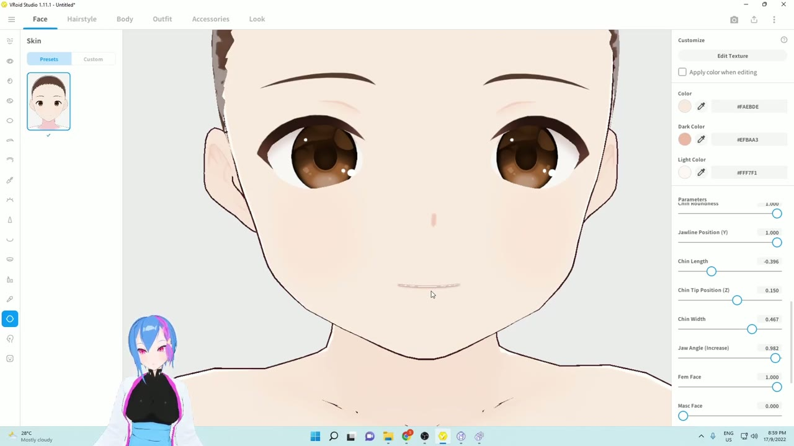
9:35 · Face → Skin → Presets。肤色 Color #FAEBDE，Dark Color #EFBAA3，Light Color #FFF7F1。Chin Roundness 1.000。Jawline Position (Y) 1.000。Chin Length -0.396。Chin Tip Position (Z) 0.150。Chin Width 0.467。Jaw Angle (Increase) 0.982。Fem Face 1.000。Masc Face 0.000。
口播说脸这段可以跳过，只是为了让脸配上丰满的身体。大约 4:25 到 8:00 都在改眼睛，耳朵也拨过，这篇不逐项记。脸型停在这一屏：下巴圆度、下颌位置和 Fem Face 都在最右，Jaw Angle (Increase) 经过 0.542 后是 0.982，下巴长度是 -0.396，下巴宽度 0.467。稍早 Sunken Cheeks 是 0.709，Cheekbones Position (Z) 是 0.000。滑杆名字是往下陷，这一帧正面看起来仍是圆脸，圆主要来自头宽、下巴和下颌，不把 Sunken Cheeks 写成加腮。
套上衣服之后
身体阴影和脸对不齐
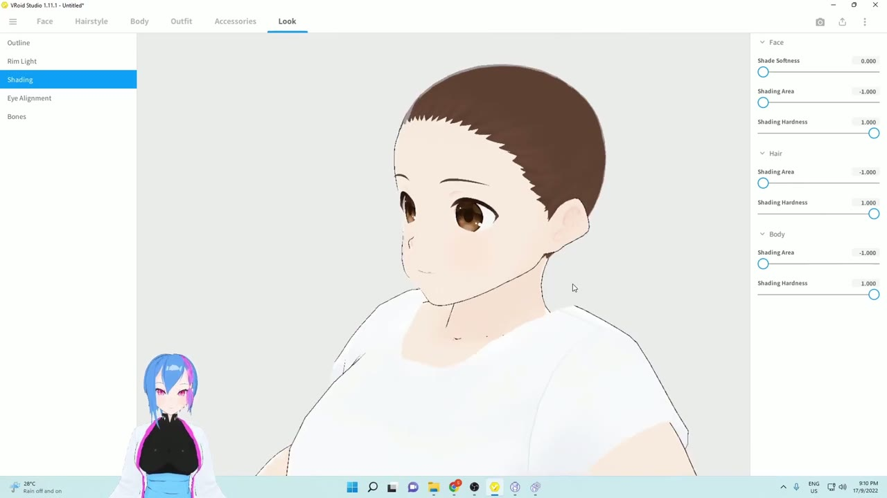
10:22 · 顶栏 Look，左侧选中 Shading，旁边还有 Outline、Rim Light、Eye Alignment、Bones。Face：Shade Softness 0.000，Shading Area -1.000，Shading Hardness 1.000。Hair：Shading Area -1.000，Shading Hardness 1.000。Body：Shading Area -1.000，Shading Hardness 1.000。
口播说 Bodysuit 上的皮肤仍算衣服，不算身体，所以身子的阴影会和脸不一样，要把阴影关掉。10:00 时 Body 的 Shading Area 还是 0.575、Hardness 0.450，Face 的 Shade Softness 是 0.638、Hardness 0.075，Hair 的 Area 是 0.000、Hardness 0.600。这一帧三处 Area 都收到 -1.000，Hardness 都到 1.000，Face 的 Shade Softness 收到 0.000。白上衣上的暗部比刚才少，脸也更平。
正面有肚子，侧面胸口发平
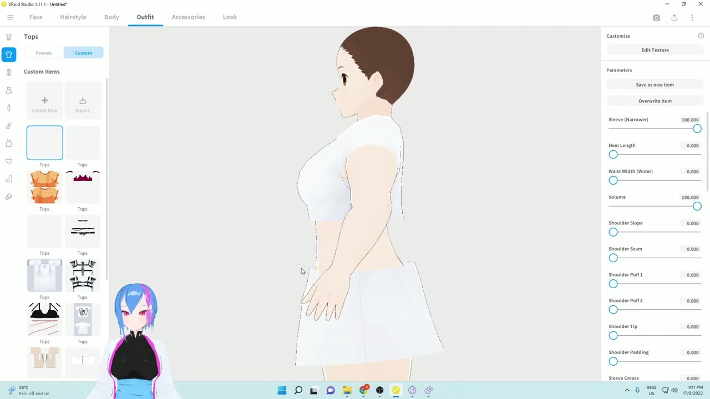
10:55 · Outfit → Tops → Custom。Sleeve (Narrower) 100.000。Hem Length 0.000。Waist Width (Wider) 0.000。Volume 150.000。Shoulder Slope、Shoulder Seam、Shoulder Puff 1、Shoulder Puff 2、Shoulder Tip、Shoulder Padding 是 0.000。
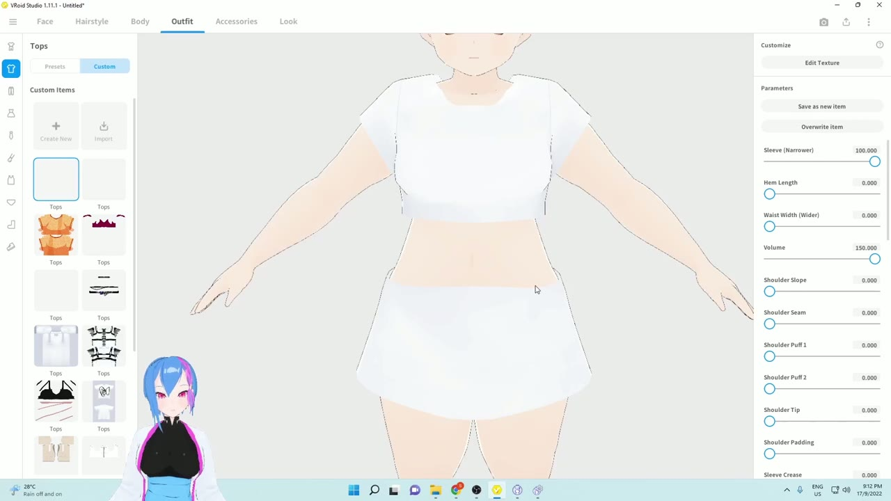
11:12 · 还是 Tops 的 Custom。Sleeve (Narrower) 100.000，Hem Length 0.000，Waist Width (Wider) 0.000，Volume 150.000。光标在裙腰。头被画面切掉一截。
口播说普通上衣和铅笔裙几乎没有能跟着丰满身体走的选项，套得上的主要是 bodysuit 自己和长外套。这件上衣能看见的就是袖子变窄到 100、Volume 到 150，腰宽那一项是 0。正面小腹是鼓的。转到正侧，胸还向前突，肚子却平回去。口播说这是 VRoid 比例的问题，要再改得自然得进 Blender 雕刻；视频里没有打开 Blender。
腋下穿进衣服
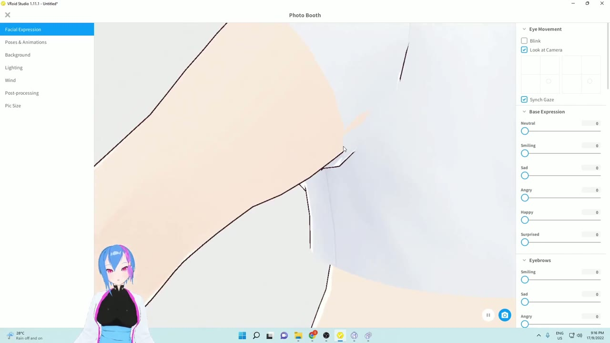
11:28 · Photo Booth。左侧有 Facial Expression、Poses & Animations、Background、Lighting、Wind、Post-processing、Pic Size。右侧 Look at Camera 勾着。光标停在皮肤和白袖子交界的地方。
口播说长外套和裙子都会穿模。这一帧是腋下：皮肤的边插进白袖子里。没有新的体型滑杆。
在衣服贴图上把露出的皮肤擦掉
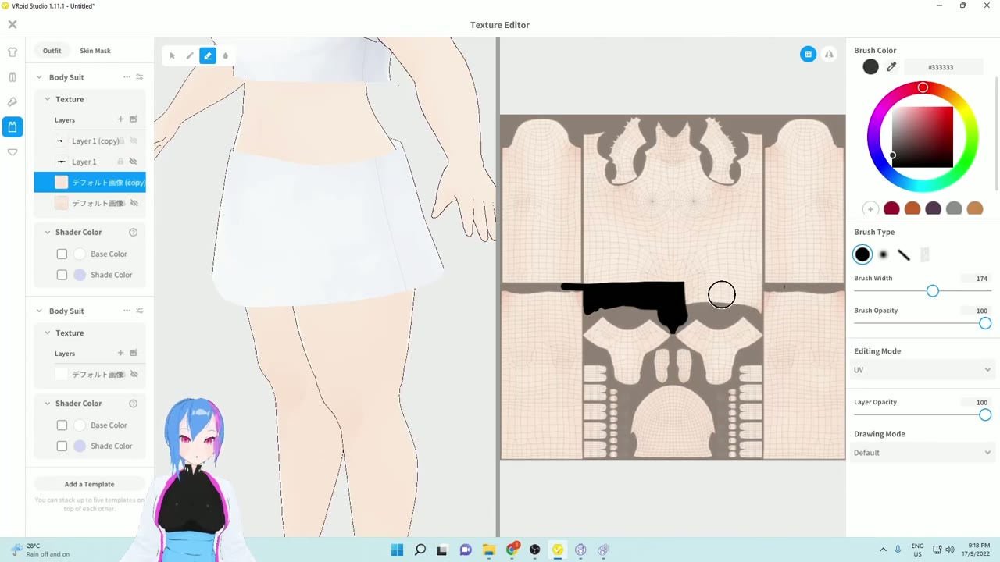
11:32 · Texture Editor，Outfit 页，不是 Skin Mask。上面那件 Body Suit 的 Layers 里选中「デフォルト画像 (copy)」。笔色 #333333，Brush Width 174，Brush Opacity 100，Editing Mode 是 UV，Layer Opacity 100，Drawing Mode 是 Default。Base Color 和 Shade Color 没勾。
口播说 Bodysuit 被当成皮肤之后，衣服上露出来的部分要在衣服贴图里擦掉，而不是去勾 Skin Mask。这一帧 Skin Mask 没被选中。UV 胯部先有一块黑，接着同一块的右侧变成棋盘格，是在擦。下面还有第二件 Body Suit，它的层没有被选中。预览里裙子还是白的，擦过的地方这一帧看不出洞。
长裙要把腰收回去
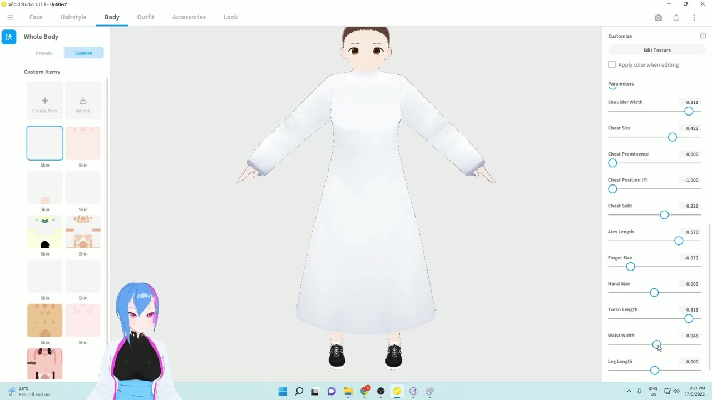
11:56 · 回到 Body → Whole Body → Custom。Shoulder Width 0.811，Chest Size 0.423，Chest Prominence 0.000，Chest Position (Y) -1.000，Chest Split 0.229，Arm Length 0.573，Finger Size -0.573，Hand Size -0.009，Torso Length 0.811。光标在 Waist Width，读数 0.048。Leg Length 0.000。
长裙跟着先前的腰宽鼓成一块。口播说想要过膝的裙子，就把 Waist Width 收回来；膝盖以上的短裙不用收。这一帧腰从 2.000 收到 0.048，其余体型读数还是 4:16 那一组。裙子垂下来，腰不那么鼓。头到鞋都在，但衣服把改过的肚子挡住了，所以封面仍用开头那张露出身形的全身。